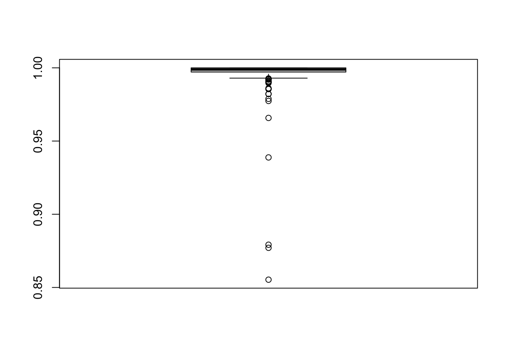
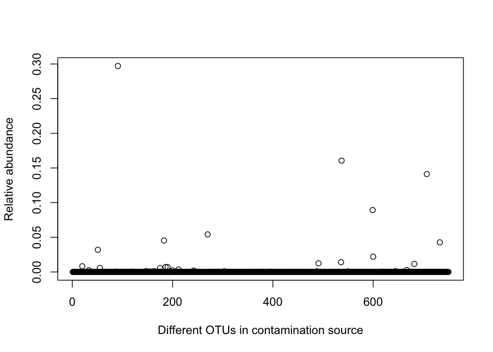
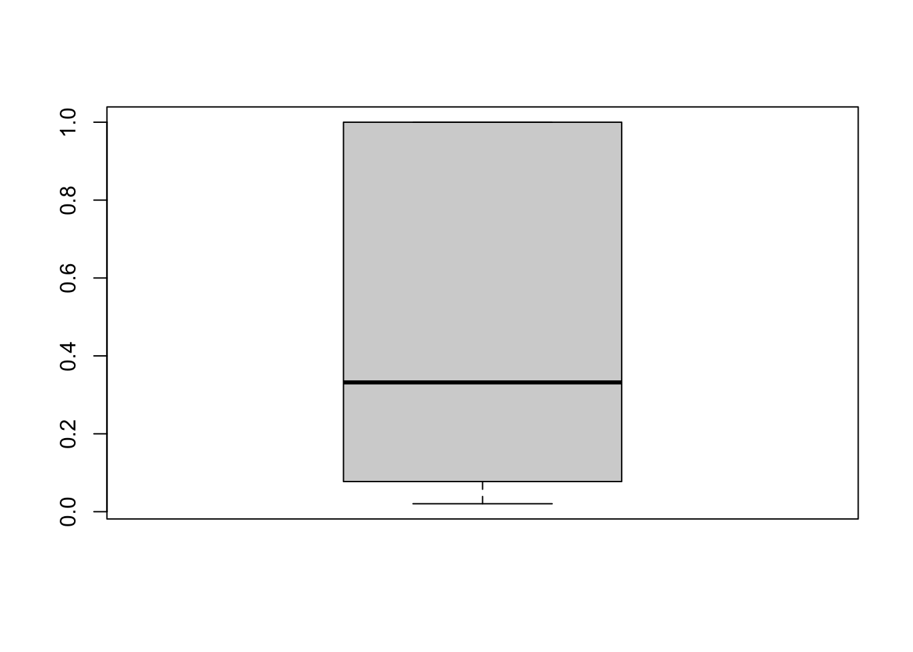

SCRuB Tutorial

In this tutorial, we demonstrate how SCRuB should be used to remove contamination from microbial samples. All you need to run SCRuB is a count matrix of control and non-control samples. To run the SCRuB with its full spatial component, which is strongly recommended, the well locations of each sample must also be provided.
Loading the data
The starting point for SCRuB is a matrix, in which each row represents a sample, and each column represents each sample’s read counts that correspond to a certain taxa (e.g ASV, OTU, species). In general, we recommend to run SCRuB on the most granular version of the data possible, and so data should only be grouped to higher orders of phylogeny (e.g. genus, family…) after completing the SCRuB pipeline.
We start by loading the necessary packages, such as
SCRUB. We also include the use of tidyverse
within our tutorial
set.seed(1)
library(tidyverse)
library(SCRuB)As an example dataset, we use processed samples publicly available from Qiita (link), from a dataset of plasma samples, made public by Poore et al. In the ensuing pipeline, we demonstrate how SCRuB can be used to remove the contamination from the plasma using the control samples, and pub liscly available metadata published by Poore et al.
data <- read.csv('plasma_data.csv', row.names=1) %>% as.matrix()
dim(data)## [1] 381 7777Next, we load a metadta file, which is in the format required for
SCRuB. Before running SCRuB, we recommend that users make
sure their metadata file formats are aligned with the one shown
here.
metadata <- read.csv('plasma_metadata.csv', row.names=1)
metadata %>% head()## is_control sample_type sample_well
## 12692.150003 FALSE plasma H14
## 12692.150005 FALSE plasma L14
## 12692.150006 FALSE plasma B16
## 12692.150007 FALSE plasma J14
## 12692.150011 FALSE plasma J16
## 12692.150013 FALSE plasma L16Running SCRuB
scr_out <- SCRuB( data[,1:750], metadata ) # shortening feature space to shorten tutorial runtime...## [1] "Incorporating the well metadata to track well-to-well leakage!"
## [1] "SCRuBbing away contamination in the control blank DNA extraction controls..."
## [1] "SCRuBbing away contamination in the control blank library prep controls..."Evaluating outputs
Let’s take a look at the results. The estimated level of
contamination was resonable, as the fitted p parameters
indicate our samples are typically close to 3%
contamination.
scr_out$p %>% boxplot()
To take a look at the cleaned samples, refer to the
decontaminated_samples entry.
decontaminated_samples <- scr_out$decontaminated_samples
decontaminated_samples[1:10, 25:40]## G000006425 G000006445 G000006515 G000006565 G000006605 G000006685
## 12692.150003 0 0 0 305 0 0
## 12692.150005 0 0 0 441 0 0
## 12692.150006 0 0 0 11235 0 0
## 12692.150007 0 0 0 3888 0 0
## 12692.150011 0 0 0 33 2 0
## 12692.150013 0 0 0 215 0 0
## 12692.150022 0 7 0 797 0 0
## 12692.150031 0 0 0 9027 0 0
## 12692.150032 0 0 0 1436 0 0
## 12692.150080 0 0 0 223 0 0
## G000006725 G000006765 G000006925 G000006945 G000007065 G000007145
## 12692.150003 0 26 0 0 0 0
## 12692.150005 0 22 1 0 0 0
## 12692.150006 0 142 0 0 0 30
## 12692.150007 0 57 0 0 0 0
## 12692.150011 0 23 0 0 0 4
## 12692.150013 0 38 0 0 0 0
## 12692.150022 0 26 0 0 0 0
## 12692.150031 0 60 0 0 0 2
## 12692.150032 0 55 0 0 0 274
## 12692.150080 0 50 0 0 0 4
## G000007205 G000007225 G000007345 G000007605
## 12692.150003 0 0 0 0
## 12692.150005 0 0 0 0
## 12692.150006 0 0 0 0
## 12692.150007 0 0 0 0
## 12692.150011 0 0 0 0
## 12692.150013 0 0 0 0
## 12692.150022 0 0 0 0
## 12692.150031 0 0 0 0
## 12692.150032 0 0 0 0
## 12692.150080 0 0 0 0An output from ever inner iteration of the SCRUB function is the
gamma parameter, which is a vector representing the
estimated relative abundance of a contamination community.
scr_out$inner_iterations$`control blank library prep`$gamma %>% plot()
It is strongly recommended to incorporate the well metadata of each sample into SCRuB, as this makes it possible ot directly account for potential well leakage into negative controls, reducing the risk of wrongly removing certain species during decontamination.
One additional output when incoprorating the well metadata is the
alpha parameters, which is a n_control by
n_samples + 1 matrix that represents the estimated level of
leakage into each control. The last column of the alpha
matrix represents the estimated proportion of each control that
originates from the contamination source. In this case,
SCRuB estimated a very high level of leakage for many DNA
extraction samples, with a median estimated well-to-well leakage of
60%.
boxplot( scr_out$inner_iterations$`control blank DNA extraction`$alpha[, ncol(scr_out$inner_iterations$`control blank DNA extraction`$alpha)] )